一、前言
美军 JIE（联合信息环境）的目标是实现“三个任意”的愿景 —— 美军作战人员能够用任意设备、在任意时间、在任意地方获取经授权的所需信息，以满足联合作战的需求。
JIE 的关键领域是：1）网络现代化（网络规范化）；2）网络安全体系架构（单一安全架构，SSA/CCA）；3）身份和访问管理（IdAM/ICAM）；4）企业运营；5）企业服务；6）云计算；7）数据中心整合；8）任务伙伴环境（MPE）；9）移动性。“美军网络安全”系列将围绕这些主题进行介绍。
本系列第一篇（美军网络安全 | 开篇：JIE（联合信息环境）概述）介绍了美军 JIE（联合信息环境）的总体情况。
本系列第二篇（美军网络安全 | 第 2 篇：JIE 网络安全架构SSA（单一安全架构））和第三篇（美军网络安全 | 第 3 篇：JIE 联合区域安全栈 JRSS）分别介绍了 JIE 网络安全体系架构和重要实现。
本系列第四篇（美军网络安全 | 第 4 篇：跨域解决方案（CDS））介绍了不同密级网络之间安全连接的解决方案。
本篇（即第五篇），将介绍身份和访问安全的解决方案 —— IdAM（身份与访问管理）。它在 JIE 框架中的地位如下图所示：
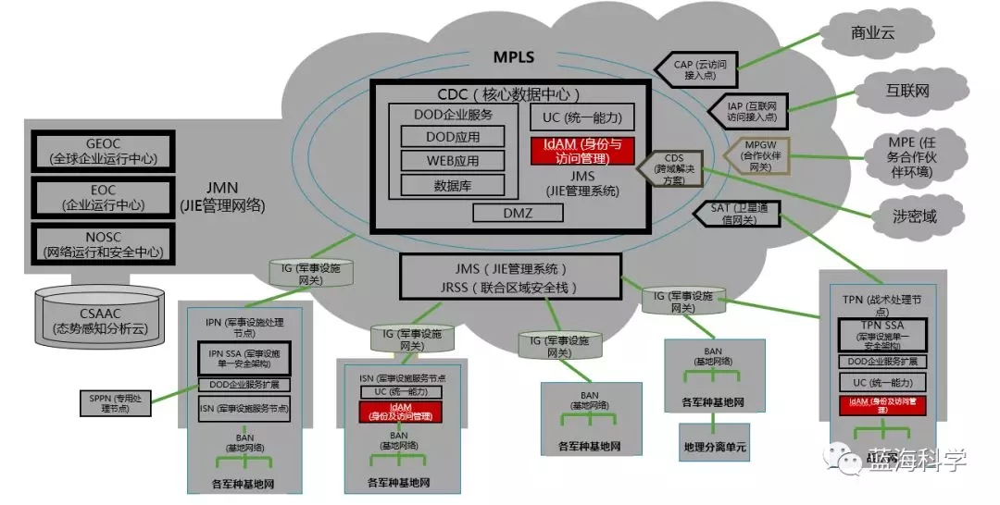
我们曾经提到过，在下面的 JIE 框架图中，所有深红色部分都属于网络安全内容，即 SSA（单一安全架构）涵盖的范畴。然而 IdAM 并不是深红色，而是浅蓝色。这种颜色主要代表的是企业化能力和服务。（细节是魔鬼，这张图中的各种颜色，都是有特定含义的）
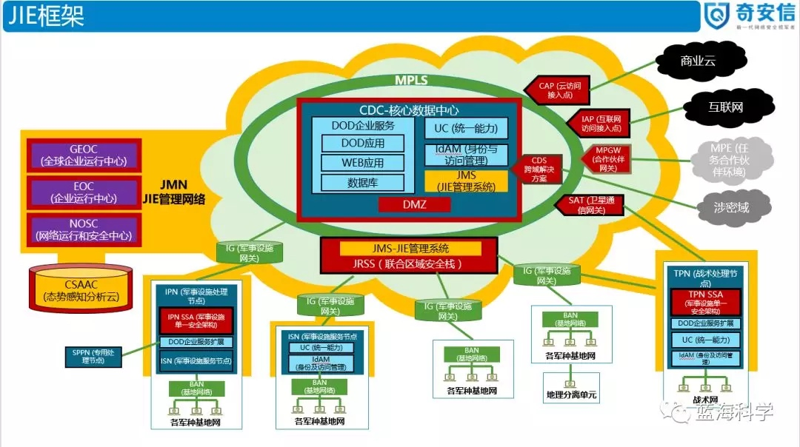
笔者推测，美军这么看待 IdAM 的原因是：IdAM 与传统的 PKI/CA 认证体系一脉相承，早已成为美国国防部一项非常基础、非常重要的服务——信任基础设施。
笔者提示：对 Gartner 自适应安全防护模型和 Gartner 自适应访问控制模型比较熟悉的同学知道，安全和信任分别解决了防护侧和访问侧的问题。从这个意义上讲，信任是与安全并驾齐驱的领域。所以，本次介绍的 IdAM（解决信任问题）与前面强调过的单一安全架构 SSA（解决安全问题）在 JIE 中的地位是可以类比的。
说明：在较新的国防部文件中，IdAM 也经常被称为 ICAM（身份、凭证与访问管理）。
二、IdAM 背景（GIG 时代）
1、GIG 2.0 中的全球访问愿景
先看一张 2009 年国防部 GIG（全球信息栅格）2.0 的作战概念图：
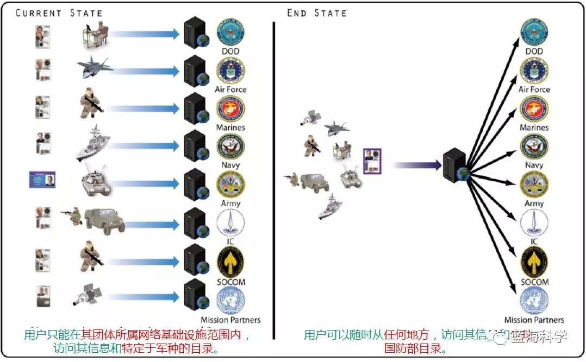
左边是美军当时的访问能力状态，右侧是美军希望达到的目标状态。很明显，那时的认证基础设施和访问目录都是分散的，他们希望能够实现大统一，将认证和访问控制集中统管起来。
注意，这是 2009 年的图。当时，JIE（联合信息环境）概念尚未提出。2012 年后提出的 JIE，也非常推崇统管制，其目的是冲破组织烟囱和功能烟囱的藩篱。这是美军 IT 管理机制的一次影响深远的重大变革，树立了管理制度大胆变革的榜样。
从集中统管这种思路上看，IdAM 毫无疑问走在了前头。当然，这也与其作为基础设施的地位分不开。无论是 GIG 时代，还是 JIE 时代，都是如此。
全球认证、访问控制、目录服务是 GIG 2.0 作战概念的 3 个关键特征，用于确保任何授权用户，利用通用和移动的身份证书，能够从任意地点访问全球网络基础设施，并使所有授权的作战人员、业务支持人员或情报人员都能获得与其任务相关的和可视的信息、服务和应用，同时做到单一签名，在任意时间和地点，实现对网络、信息技术、国家安全系统服务的访问，以及对整个国防部全球地址清单的访问。《全企业访问网络和协同服务参考体系结构》（EANCE RA）正是着眼全球可访问资源的全球认证、授权和访问控制，进行了体系结构设计。
2、信息保障基础设施中的身份访问控制
在 GIG（全球信息栅格）时代，IdAM 的功能主要被包含在信息保障（IA）基础设施中。信息保障基础设施由各种软硬件以及管理系统和安全保密设备组成,用于维持和保护 GIG 网络的正常运行以及身份识别与授权、访问控制、用户信息保护、动态管理、资源分配、网络防御与态势感知等功能，确保 GIG 网络的有效操作和安全可靠。2006 年，美国国防部颁布了“全球信息栅格信息保障体系结构” 1.1 版，确定了 GIG 信息保障任务的 6 个能力域、15 种能力要求、19 项基本系统功能。
信息保障机制包括：基于策略决策服务（PDS）、策略检索服务（PRS）、策略管理服务（PoAS）、证书确认服务（CVS）、主要特征识别服务（PrAS）等 5 项“核心”功能。基于这些功能形成的保护机制，基本上可以确保其他服务功能的安全调用。DoD 信息保障服务机制如下图所示：
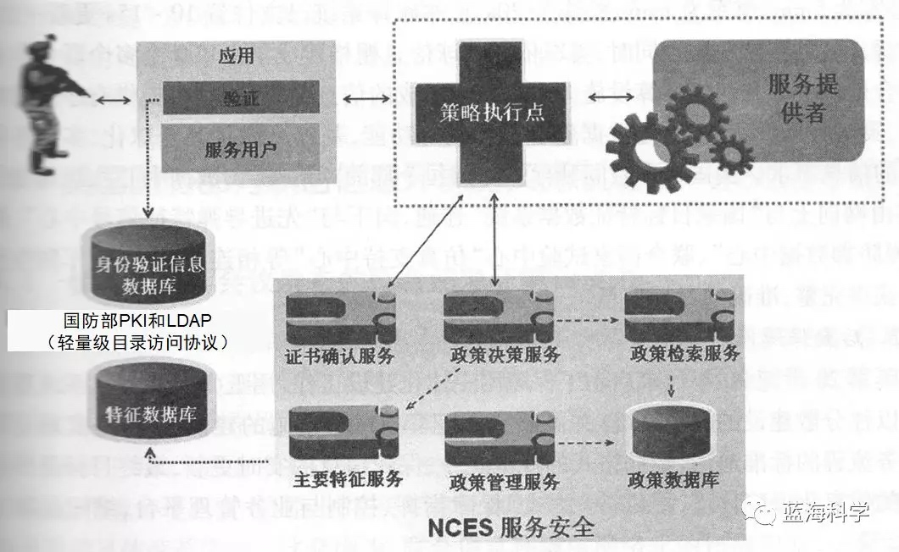
这种保障机制可以实现：
- 认证和授权：只有授权用户(服务用户、服务提供者以及各种应用)可调用信息服务；
- 保密性：可保护信息或文件，使其不被非授权用户访问；
- 数据完整性：保护信息在传输过程中不被非授权用户修改；
- 不可否认性：确保信息发送者不能否认已发送信息，信息接收者不能否认已接收的信息；
- 问责性：提供安全登录和审查；
- 互操作性：接口可支持各种领域或者机构的商用技术方案。
3、PKI/PKE
国防部 PKI（公共密钥基础设施）：负责公钥证书及其相应私钥的生成、生产、分发、控制、撤销、恢复和跟踪。
公钥启用（PKE， Public Key Enablement）：是确保应用程序可以使用由 PKI 颁发的证书来支持标识和身份验证、数据完整性、机密性和/或技术不可否认性的过程。
PKE 的常见用例包括启用：
- 智能卡登录 DoD 网络和基于证书的系统认证；
- 到 DoD 服务器的安全连接（SSL/TLS）；
- 来自桌面、Web、移动客户端的电子邮件的数字签名和加密；
- 表格的数字签名。
当前，国防部 PKI 的发展方向：
- 非个人实体（NPE）：NPE 系统为 NIPRNET 和 SIPRNET 上的设备（如工作站、Web服务器、网络设备）和服务，提供了更加简化的 PKI 证书颁发。
- 移动认证：为 DoD PKI 订阅用户在商用移动设备上使用，提供了一种安全、可扩展的分发软件证书的方法。即后文提到的纯种系统；
PKI有两种基本类型：
- 国防部 PKI（DoD 证书颁发机构）：国防部向人员实体和非人员实体（如网络服务器、网络设备、路由器、应用程序）颁发证书，以支持国防部的任务和业务运作。
- ECA PKI（外部证书颁发机构）：国防部已经建立了外部认证机构（ECA）计划，以支持向行业合作伙伴和其他外部实体和组织，颁发国防部批准的证书。
对于 DoD PKI：
- 在 NIPRNET 上：国防部 PKI 是一个层次结构系统，在层次结构的顶部有一个根证书机构（CA），以及一些支持可扩展性和提供灾难恢复能力的颁发 CA。该 PKI 在公共访问卡（CAC）上颁发证书，并颁发软件证书以支持应用程序需求。
- 在 SIPRNET 上：国防部在 NSS（国家安全系统）PKI 根 CA 下运行 CA，该根 CA 支持在机密网络上拥有用户或系统的所有联邦机构。NSS PKI 在 SIPRNET 硬件令牌和软件证书上颁发证书，以支持应用程序需求。
对于 ECA PKI：
- 根据 ECA 项目颁发的 PKI 证书，提供了一种机制，使这些实体能够与国防部安全通信，并认证到国防部信息系统。
- ECA PKI 由一个根 CA 和从属 CA 组成，根 CA 在运行 DoD PKI 根 CA 的同一设施中维护，而从属 CA 则由授权供应商维护。
PKI 互操作性是国防部及其联邦政府和行业内合作伙伴之间安全信息共享的重要组成部分。这些年来，国防部 PKI 不断扩展与外部的互操作性。下面 2016 年的国防部 PKI 外部互操作性架构图，说明了国防部如何通过联邦桥与批准的外部 PKI 进行交互。
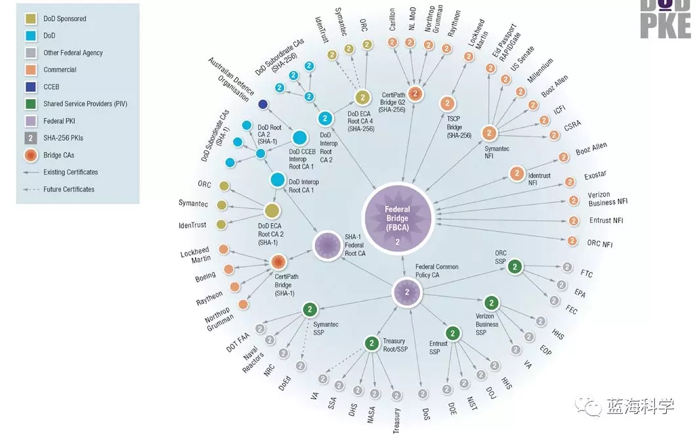
4、军事人员的通用访问卡
1999 年开始，美国国防部开始为现役人员、预备役人员、文职雇员制发新式通用访问卡（CAC 卡，Commom Access Card）。
2006 年，美国国防部开始对个人发放新一代通用访问卡（CAC）。新卡大约相当于标准信用卡大小，在一个集成电路芯片上存储 144K 的数据存储和内存。新型通用访问卡提供统一的电子结构，增加了身份欺骗防护措施，并升级了安全和隐私能力。新卡的芯片上保存了 PKI 证书、两枚指纹、一张数码照片、个人身份验证（PIV）证书、人事关系、社会保险号、机构、卡片有效期。同时，在发卡前还将对人员进行背景检查。
CAC 卡允许对所有物理和逻辑访问，进行快速身份验证和增强安全性。
CAC 卡存储的数据只能通过安全的CAC应用程序访问。事实上，如果没有以下条件，就无法访问存储在 CAC 上的信息：
- 个人识别号（PIN）：如果忘记了 PIN ，只能前往发行站点，将您的指纹与您发行卡时存储在国防注册资格报告系统中的指纹进行匹配。如果指纹匹配成功，则可以选择新的 PIN。目前，无法远程重置您的 PIN；
- 系统访问解释数据所需的安全 CAC 应用程序。
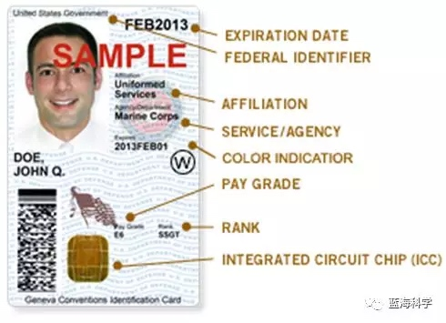
三、IdAM 内涵（JIE 时代）
1、IdAM 概念和作用
IdAM（身份和访问管理服务，Identity and Access Management）定义：IdAM 是创建、定义和管理身份信息的使用/保护的技术系统、策略和过程的组合。也称为 ICAM（Identity, Credential, and Access Management）。
IdAM 主管部门：国防部信息系统局（DISA）、国防人力数据中心（DMDC ）、国家安全局（NSA）组合资源，为国防部提供 IdAM 解决方案。
在 JIE 的概念体系中，IdAM 是实现数据安全及与任务伙伴安全共享信息的根本。“身份”可在整个企业，在所有网络上，对人员和机器，实现端到端的、唯一的、明确的区分。这些能力对于提高国防部 IT 安全性及任务有效性的双重目标至关重要。这种能力与基于访问的控制相结合，可以使得人员实体和非人员实体，能够在任意时间、在任意地点、安全地访问经过授权的国防部信息，得以实现“三个任意”的目标。
IdAM 能够正确识别国防部信息网络上的用户（人员或软件），并对用户访问网络资源和服务进行高效管理。通过将用户活动与数字身份进行绑定，确保所有用户都必须经过强有力的认证，且只能访问其经过授权的资源，并能对所有用户进行监控，从而降低内部和外部威胁风险。
国防部 PKI（公钥基础设施）认证的使用范围将最大化，可以用于 NIPRNET/SIPRNET 的所有登录和 NIPR/SIPR 国防部网站的每次访问。国防部 PKI 认证的使用，也将提供更有效的监控和追溯能力。
简而言之，IdAM 可以生成全军全网唯一且可追溯的“身份”，既使得作战人员可以实现三个任意的全球访问，又使得国防部可以有效管理网络上的所有人员和系统。
为了改变和提升国防部过去那种人工密集的、不一致的、耗时的、资源繁重的本地管理归档和信息系统访问管理能力，新的 IdAM 能力将可最大程度地实现对IT系统的日常访问控制的自动化，将使系统访问更具动态性，确保实体发现，并可实现活动监控与追溯。
2、IdAM 能力模型
IdAM 产品高层能力模型如下图所示：
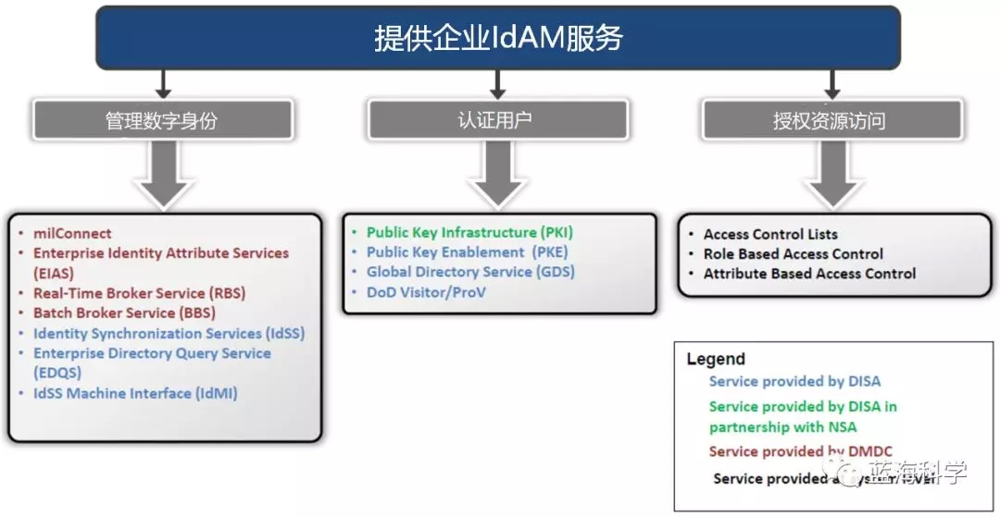
可见，IdAM 解决方案包含三个部分：
- 管理数字身份
- 认证用户
- 授权资源访问
其中，不同颜色有不同的含义：
- 蓝色：DISA 提供的服务；
- 绿色：DISA 与 NSA 一起提供的服务；
- 红色：DMDC 提供的服务；
- 黑色：系统级提供的服务。
主要功能模块的含义如下：
- milConnect：是 DMDC（国防人力数据中心）提供的一个网站，允许 DoD 成员更新他们的个人数据。
- EIAS（企业身份属性服务）：通过一个安全的、基于标准的 SAML（安全断言标记语言）接口，分发国防部人员、角色和人员属性，用于访问控制。
- RBS（实时经纪人服务）：允许 CC/S/AS（作战指挥、军种和机构）从 DMDC 的 PDR ，请求和接收当前身份数据，以验证访问其应用程序的用户的身份，并同步本地数据存储。
- BBS（批量代理服务）：该服务旨在为 DoD 军事人员、其家属、退休人员、DoD 文职人员、承包商提供到政府机构的身份验证服务。BBS 是一种异步Web服务，它允许客户在 PDR （个人数据存储库）中获取特定人员或大量人员的数据记录或更改。
- IdSS（身份同步服务）：是为作战指挥/军种/部门/机构目录和全局地址列表（GAL）填充权威企业身份和联系属性的服务。
- EDQS（企业目录查询服务）：提供国防部 CC/S/A（作战指挥、军种和机构）到包含 IdSS 数据的 LDAP/S 目录的只读连接。
- IdMI（IdSS 机器接口）：为国防部 CC/S/A （作战指挥、军种和机构）提供了使用 IdSS 数据的方法。
下图所示的 IdAM 产品架构，包含了各个组件之间的访问逻辑和流程：
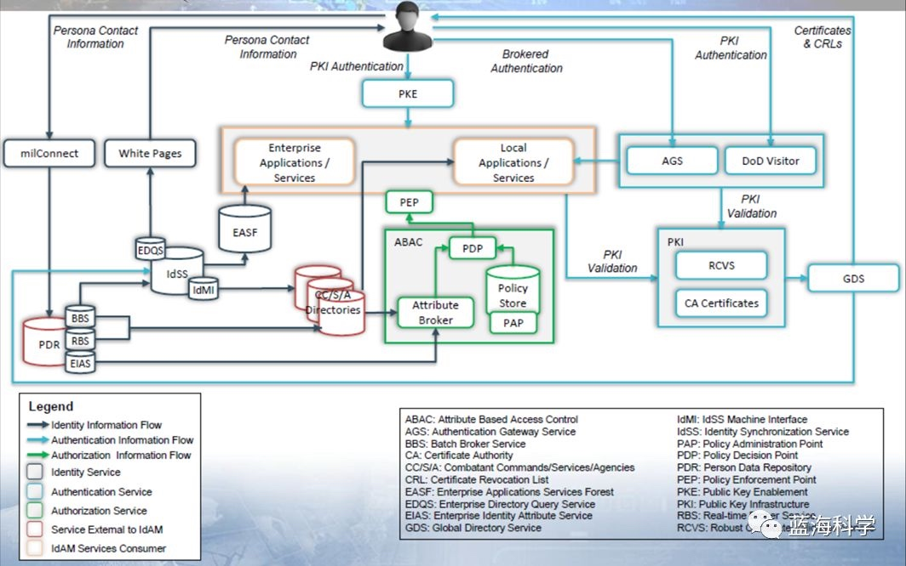
IdAM 能力将包括：
- 基于 NIPRNet 通用访问卡（CAC）和 SIPRNet 令牌，完全自动化地生成用户账户；
- 基于申请用户的属性（如密级许可权、衔级、岗位职能等），做出实时的信息访问控制决策；
- 基于更有效的监控和追溯，帮助国防部网络的运行人员和防御人员，更好地了解谁在国防部网络操作和他们正在干什么。
3、IdAM 目标状态
国防部 ICAM 的目标状态是实现动态访问控制，如下图所示：
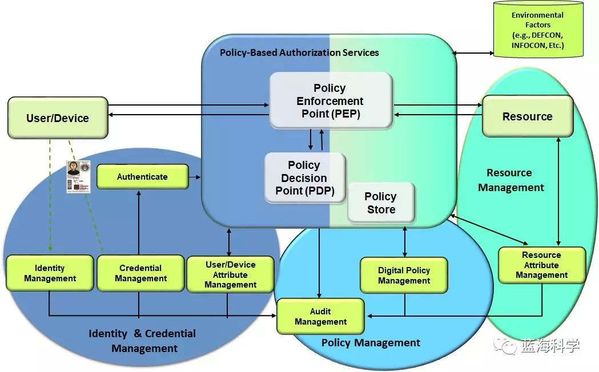
其中的主体功能是基于策略的授权服务、身份与凭证管理、策略管理、资源管理四个方面。
理解国防部 IdAM 的关键是基于属性的访问控制（ABAC）模型。ABAC 体系结构如下所示：

四、ICAM 战略目标
在《美国国防部数字现代化战略：国防部信息资源管理战略计划 FY19-23》中，列出了如下所示的战略目标：
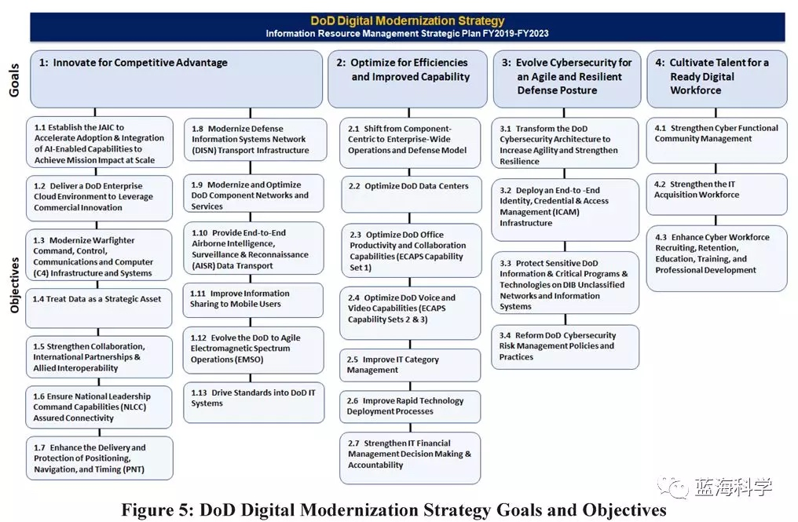
其中，ICAM 位列第 3 大战略目标（即“3：发展网络安全，形成灵活和弹性的防御态势”）的第2 子目标（即“3.2 部署端到端 ICAM 基础设施”），主要内容如下：
目标描述：
- 部署端到端 ICAM 基础设施。
- 国防部必须促进企业 ICAM 的实施，以支持快速访问任务信息，加强与盟国和伙伴的负责任的信息共享和归属，并通过移动应用和迁移到云支持更高的效率和效率。
- ICAM 创造了一个安全可信的环境，任何用户都可以访问所有授权资源（包括应用程序和数据），以成功完成任务；同时也可以让国防部随时知道谁在网络上。
战略要素：
- 战略要素 1：扩展公钥启用（PKE）能力，以支持 ICAM；
- 战略要素 2：实施自动帐户供应（AAP）；
- 战略要素 3：实施对批准的多因素认证能力的支持；
- 战略要素 4：增强企业身份属性服务（EIAS）；
- 战略要素 5：扩大派生凭证的使用；
- 战略要素 6：实施以数据为中心的方法，来收集、验证、维护和共享身份和其他属性；
- 战略要素 7：通过通用标准、共享服务和联邦，改进和启用对国防部网络和资源的认证；
- 战略要素 8：部署共享服务，促进企业 ICAM 的实施；
- 战略要素 9：实现一致的监控和日志记录，以支持身份分析，以检测内部威胁和外部攻击；
- 战略要素 10：提升治理结构，促进企业 ICAM 解决方案的开发和采用；
- 战略要素 11：制定国防部政策和标准，明确定义识别、凭证、认证、授权生命周期管理的要求。
ICAM 的四个支柱：
- 数字身份管理：建立数字身份和生命周期管理。
- 凭证管理：颁发物理或电子令牌（公共访问卡（CAC）/公钥基础设施（PKI）证书和/或帐户），作为实体权威数字身份的代理。
- 认证：通过一个凭证并验证该凭证是否为真实凭证的方式，声明身份。PKI是国防部目前的认证技术解决方案。但是，当不能使用PKI时，可以使用已批准的多因素身份验证和身份联邦服务。
- 授权：基于数字策略和有关请求身份和被访问资源的权威信息，批准访问。
五、IdAM 发展路线图
IdAM 未来几年的路线图如下图所示：
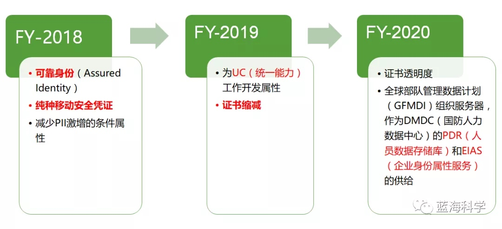
下面，主要介绍其中提到的可靠身份、纯种移动认证、证书缩减。
1、可靠身份
可靠身份（Assured Identity）：建立并持续验证数字身份，然后为该身份分配属性，并将其与个人或可信设备强关联。
可靠身份的目标：对使用移动设备的作战人员的身份的保证和保护。
可靠身份的基础能力：
- 利用移动设备上的本机传感器，收集和训练生物特征和上下文因素，以进行持续多因素身份验证。
- 使用基于硬件的安全元素，发布和保护纯种派生凭证和相关私钥，这些安全元素相当于通用访问卡（CAC）的凭证强度。
- 观察用户行为，以建立模式和网络授权的关系。
可靠身份的关键步骤如下：
硬件认证：
- 烧录到移动设备硬件中的数字密钥，为传感器数据和本地生成的密钥提供信任。
CMFA（持续多因素认证）：
- 传感器数据-行为和上下文生物识别因素-机器学习算法；
- 移动、桌面或服务器环境中的持续身份验证；
- 启用无需口令的物理和逻辑访问；
- 为逻辑和物理方式的设备访问，分配信任分数；
个性化上下文认证：
- CMFA 不断验证身份。
基于可靠身份，可以实现虚拟传输解决方案：
- 利用云托管的移动电话实例，在一台移动设备上允许访问多个密级；
- 移动设备上不存储数据，允许使用政府供应设备（GFE）和自带设备（BYOD）；
- 支持完整的设备功能：端点上的无缝虚拟化；
- 使用派生PKI证书。
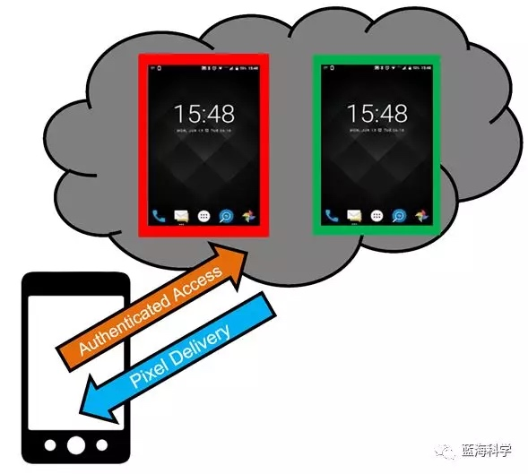
2、纯种移动认证
纯种（Purebred）移动安全凭证：
- 是派生凭证；
- 由一个密钥管理服务器和一组应用程序组成：应用程序将密钥管理与设备管理分开；
- 将密钥管理与设备管理分开：旨在促进密钥管理与设备管理的分离，以使密钥管理保持与PKI的密切关系，并在国防部企业内保持一致，而设备管理可以随每个作战场景而变化。
纯种启用了空中证书认证，取代了对智能卡读卡器的需求。
纯种由 DISA PKI 工程公司开发，旨在为 DoD PKI 用户在商用移动设备上使用提供一种安全、可扩展的分发软件证书的方法。系统首先建立对用于加密绑定到设备的配置数据的设备证书的信任，然后允许订户演示其 CAC 的拥有和使用，以生成两个新的派生凭据并恢复现有的电子邮件加密密钥。
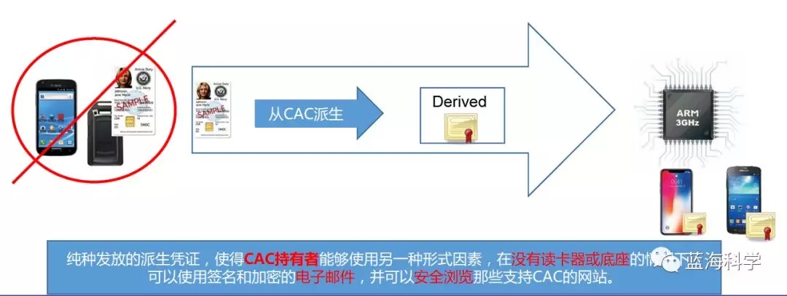
3、证书缩减
CAC 包含四种 PKI 证书：
- 国防部身份证书；
- PIV（个人身份验证）身份验证证书；
- 电子邮件签名证书；
- 加密证书；
在 2019 财年，IdAM 团队计划减少国防部颁发的 CAC 证书数量。减少证书数量后，会减少证书吊销列表的大小，并使用更少的资源来维护 PKI 基础设施，从而提高效率。
证书缩减将消除国防部身份证书，并使用已经存在于 CAC 上的 PIV 认证证书替换认证功能。
目的是对所有已颁发的 CAC 使用 PIV 认证证书。军方早在 2018 年 2 月份就开始了这项工作。
六、走向零信任
在《美国国防部数字现代化战略：国防部信息资源管理战略计划 FY19-23》中，提及了国防部向零信任发展的明确方向。主要内容如下：
零信任安全：零信任是一种网络安全策略，它将安全嵌入到整个体系结构中，以阻止数据泄露。
零信任安全是国防部首席信息官正在与 DISA、美国网络司令部、国家安全局合作探索的一项新举措。
零信任安全的优势：
- 这种以数据为中心的安全模型，消除了受信任或不受信任的网络、设备、角色或进程的概念，并转变为基于多属性的信任级别，使身份验证和授权策略在最低特权访问概念下得以实现。
- 实现零信任，需要重新思考我们如何利用现有的基础设施，以更简单、更高效的方式设计安全性，同时实现不受阻碍的操作。
- 除了总体上保护架构的优势外，还有其他跨功能的好处。
零信任的实现复杂性：
- 虽然原则上简洁易懂，但零信任的实际实现和操作，在包括网络配置、软件定义网络（SDN）、数据标签、分析、访问控制、策略编排、加密、自动化，以及端到端 ICAM（身份、凭证和访问管理）等方面，具有显著的复杂性。
- 企业级考虑还包括确定需要保护的数据、应用程序、资产、服务，以及映射事务流、策略决策、策略实施位置。
零信任适合云部署：
- 云部署非常适合实现零信任概念，特别是在使用商业云时。如果云基础设施本身受到威胁，则零信任兼容架构可提供保护，避免对手试图在我们的虚拟网络中扎根。
- 虽然商业云提供了一个扩展能力和控制成本的绝佳机会，但它们会带来风险，因为我们无法控制基础设施，而且在通信受损时可能会有延迟。而零信任关于你已经失陷的假设，特别适合云基础设施。
零信任需要安全自动化：
- 安全自动化和编排是成功部署和管理零信任兼容基础架构的关键功能，因为附加的身份验证、授权、监视和分析要求无法再通过手动管理。例如，所有节点的安全凭证需要自动化能力，以确保以机器速度进行键控和重新键控，而不会因不必要的人工干预而延迟。这需要经过认证和授权的设备确保它们正在通信的设备是健康的和经过批准的（设备认证）。
零信任需要密码现代化：
- 需要进行密码现代化，以确保数据的保护水平符合国家安全系统委员会（CNS）第 15 条政策中定义的商业国家安全算法（CNSA）套件。我们系统的加密安全性升级，可能会对遗留应用程序和硬件构成重大挑战，这些应用程序和硬件在如何支持所需的较大密钥尺寸和算法方面可能存在很大差异。
零信任需要新的分析能力：
- 分析将需要额外的能力来处理与零信任安全相关的所需传感器和日志数据。
- 可能需要采用不同的过程和程序，来测量网络的健康状况并识别异常行为。例如，网络内部资源之间的端到端加密，将限制内部数据包检查以检测问题的能力。需要采用新的分析措施，以确保只有经过授权的通信才能发生。
更进一步，在《DISA（国防信息系统局）战略计划 2019-2022》中，给出了如下的 DISA 技术路线图：
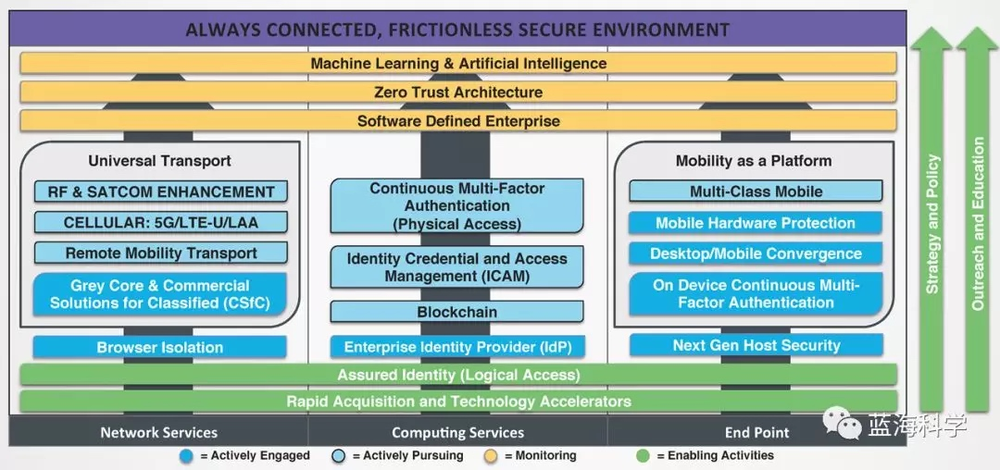
很明显，在积极追求 ICAM、持续多因素认证、区块链技术的基础上，DISA 已经把零信任架构、软件定义企业、机器学习&人工智能摆到了发展道路上。
七、零信任广告
零信任广告一：零信任提出者所著的《零信任网络》的中文译本，由奇安信身份安全团队翻译，已经面市，欢迎阅读。BCS大会就有签赠会噢：
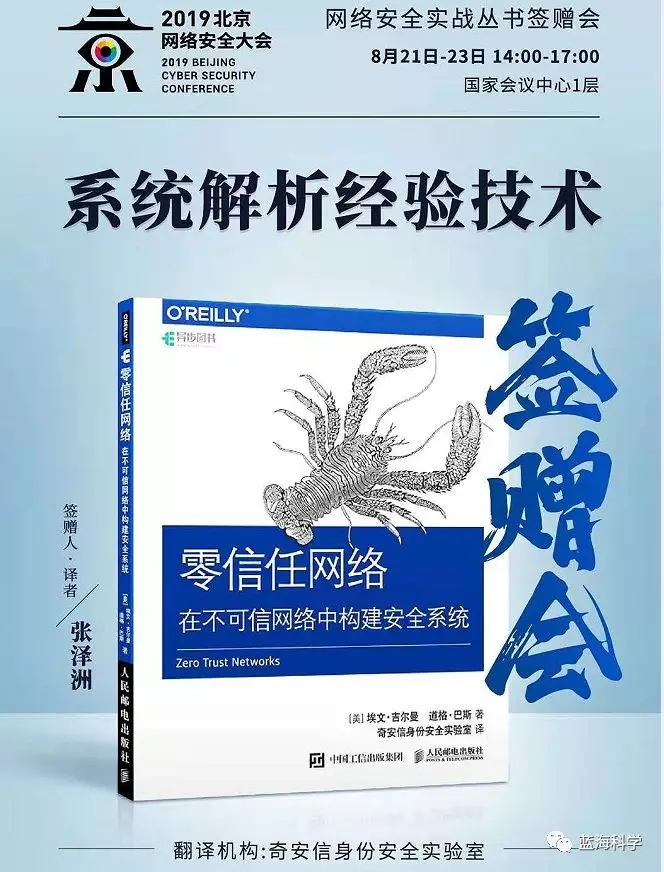
零信任广告二：奇安信零信任安全产品体系和解决方案已经基本成熟，并在国内重大部委率先落地。
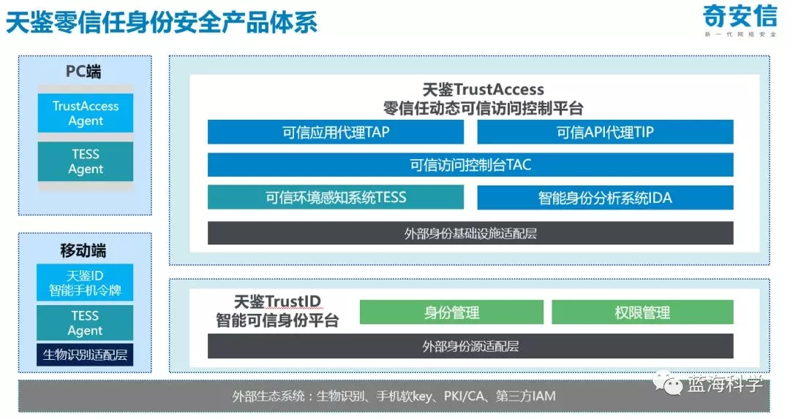
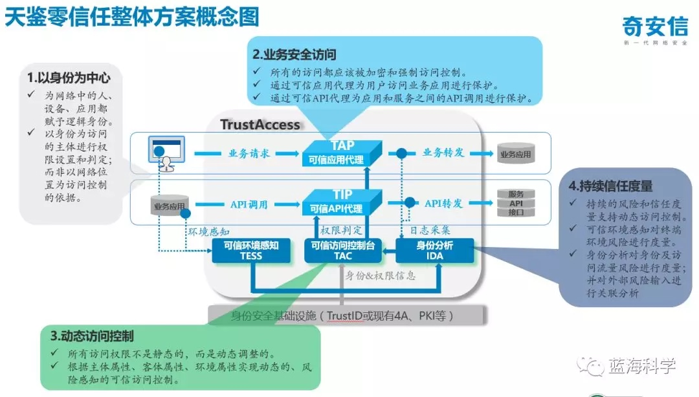
八、总结和预告
在本系列的介绍中，限于众所周知的原因，笔者只能采取蜻蜓点水的全景方式，介绍了美军网络安全的方方面面。
即便如此，也已经比网上的公开资料涵盖了更多、更深入的信息。毕竟，大部分英文原文资料是需要 FanQ 的。而不同来源之间的矛盾、不同版本之间的冲突，都需要关联和厘清。
在 JIE 的关键领域中，网络规范化、企业运营、企业服务、云计算、数据中心整合、任务伙伴环境、移动性等内容都还没有介绍，会在后期一一概述。
笔者深深地感到一种无奈：美军网络安全的博大精深，绝非朝夕之间可以理解。毕竟，美国国防部自己都在与时俱进，不断调整和优化自身的网络安全战略方向和技术路线。
笔者暗暗地感到一种喜悦：美国密级划分有非常精细化的处理手段（精细到字段级），只要是能公开的信息和技术资料都会尽量公开，因为他们以普世价值和理念宣扬为荣。作为一个技术人员，能与强者的技术理念共振，实属幸事。
笔者默默地感到一种无助：如何把美军网络安全理念和技术应用于我军、我国的实际环境，切实提升网络安全水平，更多地取决于用户自己，而非对手。作为第三方安全厂商，我们只能建议，却未必有足够的影响力。
以上观点，仅代表个人。